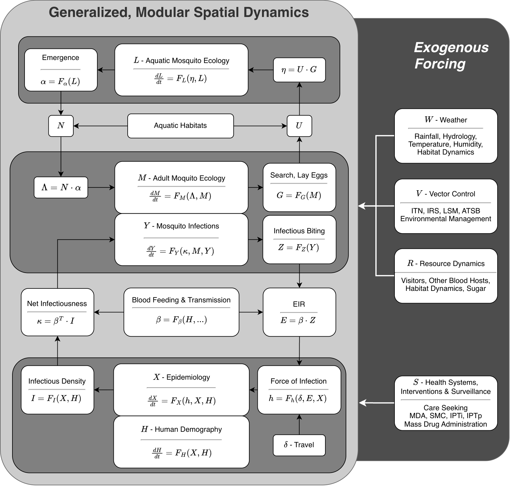

Modular Computation
The Modular Structure of
ramp.xds
Source: vignettes/modularity.Rmd
modularity.RmdThis software supports nimble model building with functions to set up, solve, and analyze dynamical systems models for mosquito ecology and mosquito-borne pathogen transmission formulated as dynamical systems as differential equations or discrete-time systems.
Dynamical systems describing mosquito-borne pathogens are naturally modular. To emphasize the modular nature, we can write the equations using modular forms (see the vignette: Modular Forms). This software implements a modular framework, and it was developed to model exogneous forcing by weather, vector control, health systems, and the environment (Figure 1).
Transmission dynamics in the software was developed around an algorithm to model mosquito blood feeding on vertebrate hosts and parasite / pathogen transmission, including patch-based spatial dynamics within a defined geographical domain. The blood feeding algorithm provides a rigorous computational interface linking dynamical components describing parasite/pathogen linking infection dynamics in mosquito and vertebrate host populations. It guarantees mathematical consistency in computing blood feeding rates and habits and in allocating bites and blood meals with heterogeneous vertebrate host population densities, including models with dynamically changing availability of host populations or other vertebrate animals.
The framework and software also support spatial models of mosquito ecology through an algorithm that describes egg laying by adult mosquitoes in aquatic habitats and emergence of adult mosquitoes. The egg laying algorithm provides a rigorous interface linking dynamical components describing adult mosquito populations in a set of spatial patches and immature aquatic mosquito populations in a structured set of aquatic habitats.
The parts of the model are:
The dynamical components
The interfaces
With these interfaces in place, we developed a code library with the goal of being able to replicate or approximate most aspects of most published models.

ramp.xds
Dynamical Components
Dynamical systems for malaria and other mosquito-borne diseases are made up of three core dynamical components that describe five core processes. There is also a generic interface to add other variables:
-
XH - a system of equations describing two inextricably linked processes:
X - the dynamics of host infection and immunity
H - human / host demography and behavior
-
MY - a system of equations describing two inextricably linked processes:
M - adult mosquito ecology
Y - parasite / pathogen infection dynamics in mosquitoes
L - a system of equations describing immature mosquito ecology
V - other dynamical components: see [Other_State_Variables]
Interfaces
Information is passed among components by two interfaces:
-
The X and Y components interact through the XY Interface. It handles:
blood feeding,
parasite transmission; and
exposure.
-
The M and L components interact through the ML Interface. It handles:
the locations of the aquatic habitats,
emergence of adult mosquitoes from aquatic habitats; and
egg laying.
Exogenous Forcing
The software was designed to build models of malaria transmission
that is forced by weather, resources, vector control, and mass health
interventions delivered through health systems. The structures get set
up in ramp.xds as ports or junctions (see
[xds_info_ports] and [xds_info_junctions]). Trivial forcing is handled
in ramp.xds but mechanistic models are
found in ramp.forcing.
Computation
The following code block illustrates how the derivatives get computed. The actual code has been implemented to
modular_example <- function(t, y, xds_obj) {
with(xds_obj,{
xds_obj = Forcing(t, y, xds_obj)
xds_obj = Emergence(t, y, xds_obj)
xds_obj = EggLaying(t, y, xds_obj)
xds_obj = BloodFeeding(t, y, xds_obj)
xds_obj = Transmission(t, y, xds_obj)
xds_obj = Exposure(t, y, xds_obj)
dL = dLdt(t, y, xds_obj)
dXH = dXHdt(t, y, xds_obj)
dMY = dMYdt(t, y, xds_obj)
dV = dVdt(t, y, xds_obj)
return(list(dL, dXH, dMY, dV))
})
}Forcing sets the value of any exogenous variables.
Emergence computes a term called
Lambdaattached toxds_objthat is used indMYdtEgg Laying computes a term called
eggsattached toxds_objthat is used indLdtBlood Feeding sets up objects on
xds_objthat affect transmission.-
Transmission(t,y,pars)computes three terms required to compute parasite transmission during blood feeding. These are stored in the main model objectpars:beta- a matrix that distributes infectious bites in a patch to individuals in human population strata.kappa- the probability a mosquito gets infected after blood feeding on a human in a patchEIR- the daily EIR
-
Exposure(t, y, pars)computes the FoI from the EIR includingenvironmental heterogeneity
travel malaria
partial immunity
-
Compute the deriviatives
dXHdtcomputes the XH Component derivativesdMYdtcomputes the MY Component derivativesdLdtcomputes the L Component derivativesdVdtcomputes the derivatives for any other variables
The derivatives are returned to be used by deSolve.
The function that updates the states for discrete time systems has the same structure.